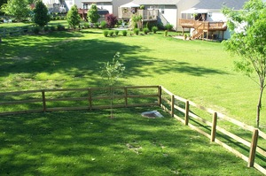
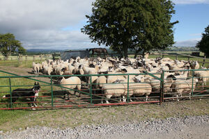
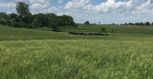
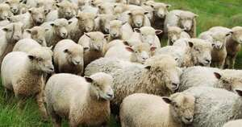

ⲓⲟϩⲓ B often wrongly for ⲟϩⲓ fold: 1 Kg 17 34 ἀγέλη, Ez 34 14 μάνδρα, Zeph 2 6 ποίμνιον, AM 115 ⲓⲟϩⲓ ⲛⲉⲥⲱⲟⲩ.
(noun masculine)
construction
yard of house, fold for cattle, sheep [επαυλις, αυλη, μανδρα]
pasture
flock, herd [ποιμνη]
pasture
flock, herd [ποιμνη]




complete
24b
ⲁϩⲓ F v ⲟϩⲉ.
25b
ⲁϩⲉⲥⲁⲩ A v ⲟϩⲉ.
90b
258a
ⲟϩⲉ, ⲟⲟϩⲉ, ⲱϩⲉ SA, ⲟϩⲓ, ⲓⲟϩⲓ B, ⲁϩⲓ F, ⲉⲓⲁϩ- A2 nn m, a yard of house, fold for cattle, sheep: Ge 25 16 B, Nu 22 39 B ⲟϩⲓ (var ⲓⲟ., S ⲣⲥⲱ), ib 32 16 B (S ⲣⲃⲉ) ἔπαυλις, but ib 31 10 B ⲙⲁ ⲛⲑⲱⲟⲩϯ ⲛⲧⲉ ⲛⲟ. ἔπ., 2 Kg 17 18 S, Is 34 13 SF (B = Gk), Jo 10 1, 16 SA2 (B do) αὐλή; Ez 34 14 B μάνδρα; Leyd 444 S parts of house ⲟ., ⲧⲣⲓⲕⲗⲓⲛⲟⲛ, ⲁⲩⲗⲏ, Kr 125 S, BM 1023 S sim, Z 349 S ⲟ. of hermit's cell (cf MG 25 99 ⲁⲩⲗⲏ, Ep 1 45), ShA 2 18 S sheep in ⲡⲟ. ⲁⲩⲱ (var ⲏ) ⲧϣⲁⲓⲣⲉ, BAp 6 S sheep's ⲟ. = MIF 9 43 S ϣⲁⲓⲣⲉ, Mor 56 27 S to build ⲟⲩⲟ. for cattle, CMSS 33 F sim ⲛⲉⲓⲕⲁⲛⲁ., Mor 31 59 S ⲡⲟ. ⲛⲛⲉϥϭⲁⲙⲟⲩⲗ. b pasture: Job 30 1 S (B ⲉⲥⲱⲟⲩ) νομάς, Ps 73 1 SB, Jer 23 1 B (S ⲙⲁ ⲙⲙⲟⲟⲛⲉ), Am 1 2 A ⲱ. (B ⲙⲁ ⲛⲙⲟⲛⲓ), νομή. c flock, herd: Ge 30 40 SB, Job 24 2 SB, Zech 10 3 AB, Lu 12 32 SB, Cl 16 1 A ⲟ. (var ⲱ.) ποίμνιον, Jo 10 16 SB (A2 ⲉⲓⲁϩⲉⲥⲁⲩ), 1 Cor 9 7 SBF ποίμνη; Deu 28 4 B (S ⲣⲥⲱ) of cattle βουκόλιον; ShWess 9 127 S ⲛⲟ. ⲛⲉⲥⲟⲟⲩ; ⲓⲟϩⲓ B: 1 Kg 16 11 (S ⲉⲥⲟⲟⲩ), Is 27 10 (S ⲟ.), Zeph 2 6 (A ϣⲱⲱⲥ) ποίμνιον & ? in ⲛⲉⲃⲓⲟϩⲓ (v ⲛⲏⲃ); 1 Kg 17 34 (S diff), Mt 8 30 (S = Gk) ἀγέλη; Pro 24 66 SA (ⲟⲟϩⲉ) αἰπόλιον; AM 228 B ⲡⲓⲓⲟϩⲓ ⲛⲗⲟⲅⲓⲕⲟⲛ of Christ. In name: ⲡⲁⲡⲟϩⲉ (AZ 40 61) = ? Πάπο. As place-name: ⲡⲟϩⲉ (Mor 47 191, Ryl 255), ⲡⲉϣϭⲉⲡⲟϩⲉ (Mor ib 174, Miss 4 763), ⲡⲉⲥϭⲡⲟϩⲉ (WS 83).
258b
ⲟϩⲓ B vb & nn v ⲱϩⲉ.
536b
ⲱϩⲉ SA nn v ⲟϩⲉ.
538b
ⲱϩⲉ SA nn v ⲟϩⲉ.
See also:
Homonyms:
| view | ⲣⲥⲱ S ⲉⲣⲥⲱ SF ⲣⲥⲟⲩ A plural: ⲣⲥⲟⲟⲩⲉ, ⲉⲣⲥⲟⲟⲩⲉ S plural: ⲉⲣⲥⲱⲟⲩ B | (noun feminine) fold for cattle or sheep [επαυλις, βουκολιον]907 |
| view | ⲧⲃⲏⲗ S ⲑⲃⲏⲗ B | (noun masculine) fold (?) for sheep1572 |
| view | ϣⲁⲓⲣⲉ SO ϣⲁⲓⲣⲓ BO ϣⲉⲉⲓⲣⲉ A ϣⲉⲓⲣⲉ L ϣⲉⲓⲗⲓ F | (noun feminine) couch, cohabitation [κοιτη]
sheepfold [μανδρα, ποιμνη]1962 |
| view | ⲱⲣ(ⲉ)ⲃ S ⲱⲣϥ SB ⲱⲣⲃⲉ SaA ⲉⲣⲃ- S ⲉⲣϥ- B ⲁⲣⲉϥ- F ⲟⲣⲃ⸗ S ⲟⲣϥ⸗ SB ⲁⲣⲃ⸗ SfA ⲟⲣⲃ† S ⲁⲣⲃ† SL ⲟⲣϥ† SB ⲁⲣⲃⲉ† A | (verb) intr: be enclosed, apart, quiet [ησυχαζειν]
tr: restrict, surround1819 |
| view | ϭⲱⲙ SALBF ϭⲟⲙ, ⲕⲟⲙ S ϫⲱⲙ B ϭⲱⲙⲉ S plural: ϭⲟⲟⲙ SAL plural: ϭⲟⲟⲙⲉ L plural: ⲕⲁⲁⲙ S | (noun masculine) garden, vineyard, property [κηπος, κτημα, αμπελων]742 |
| view | ⲁⲛϩ S ⲟⲛϩ SB | (noun masculine) yard, court [αυλη]520 |
| view | ϭⲟⲙ S | (noun feminine) court, hall (?) [αυλη]2565 |
| view | ϩⲁⲉⲓⲧ, ϩⲁⲓⲉⲓⲧ, ϩⲁⲉⲓⲏⲧ, ϩⲁⲓⲧ, ϩⲉⲉⲓⲧ, ϩⲏⲉⲓⲧ, ϩⲏⲓⲉⲓⲧ, ϩⲟⲉⲓⲧ S | (noun feminine) gateway, porch, forecourt [πυλων]274 |
| view | ⲉⲓⲱϩⲉ, ⲓⲱϩⲉ SA ⲓⲟϩⲓ BF ⲓⲱϩⲓ F ⲉⲓⲉϩ-, ⲉⲓⲱϩ- S ⲓⲁϩ- B ⲓⲉϩ- F plural: ⲉⲓⲁϩⲟⲩ, ⲉⲓⲁϩⲟⲩⲉ S | (noun masculine) field [αγρος, γεωργιον, χωριον]755 |
| view | ⲓⲟϩⲓ B | (noun) for ϩⲟⲓ S water-wheel2799 |
Homonyms:
| view | ⲱϩⲉ SAL ⲟϩⲉ S ⲟϩⲓ B ⲱϩⲓ SfF ⲁϩⲓ F ⲁϩⲉ† SAL ⲟϩⲓ† BF | (verb) intr: stand, stay, wait [μενειν, ισταναι]
with ⲣⲁⲧ⸗148 |